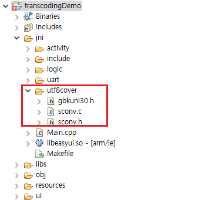

UTF-8 encoding
현재 시스템은 UTF-8 인코딩 만 지원합니다. 예를 들어 Text View 같은 컨트롤은 일반적으로 UTF-8로 인코딩 된 문자열 만 표시 할 수 있습니다. 따라서 다른 코드를 정상적으로 표시하려면 직접 트랜스 코딩해야합니다.
sconv
Sconv는 트랜스 코딩을 위한 오픈 소스 라이브러리로 utf-8과 gbk간의 변환에 사용됩니다.
준비
sconv 소스 파일 다운로드 후 프로젝트jni 폴더에 압축을 풉니 다.

UTF-8 to GBK
필요한 헤더 파일
#include <string> #include "utf8cover/sconv.h"함수 추가
string utf8_to_gbk(const char* utf8_str) { int size = sconv_utf8_to_unicode(utf8_str, -1, NULL, 0); wchar *unicode = new wchar[size / 2 + 1]; size = sconv_utf8_to_unicode(utf8_str, -1, unicode, size); unicode[size / 2] = 0; size = sconv_unicode_to_gbk(unicode, -1, NULL, 0); char *ansi_str = new char[size + 1]; size = sconv_unicode_to_gbk(unicode, -1, ansi_str, size); ansi_str[size] = 0; string gbk(ansi_str, size); delete[] ansi_str; delete[] unicode; return gbk; }- 함수를 사용하여 인코딩 변환을 수행합니다. 예는 다음과 같습니다.
const char* utf8_str = "This is utf8 encoding"; string gbk = utf8_to_gbk(utf8_str); LOGD("After conversion, a total of %d bytes", gbk.size()); for (size_t i = 0; i < gbk.size(); ++i) { LOGD("%d byte = %02X", i, gbk.data()[i]); }
GBK to UTF-8
필요한 헤더 파일
#include <string> #include "utf8cover/sconv.h"함수 추가
string gbk_to_utf8(const char* gbk_str) { int size = sconv_gbk_to_unicode(gbk_str, -1, NULL, 0); wchar *unicode_str = new wchar[size / 2 + 1]; size = sconv_gbk_to_unicode(gbk_str, -1, unicode_str, size); unicode_str[size / 2] = 0; size = sconv_unicode_to_utf8(unicode_str, -1, NULL, 0); char *utf8_str = new char[size + 1]; size = sconv_unicode_to_utf8(unicode_str, -1, utf8_str, size); utf8_str[size] = 0; string utf8(utf8_str, size); delete[] unicode_str; delete[] utf8_str; return utf8; }- 함수를 사용하여 인코딩 변환을 수행합니다. 예는 다음과 같습니다.
//To testing, here is a gbk encoding array whose content is "This is gbk encoding" const char gbk_str[] = {0xd5, 0xe2, 0xca, 0xc7, 0x67, 0x62, 0x6b, 0xb1, 0xe0, 0xc2, 0xeb,0}; string utf8 = gbk_to_utf8(gbk_str); LOGD("After conversion, a total of %d bytes", utf8.size()); LOGD("Content is：%s", utf8.c_str());